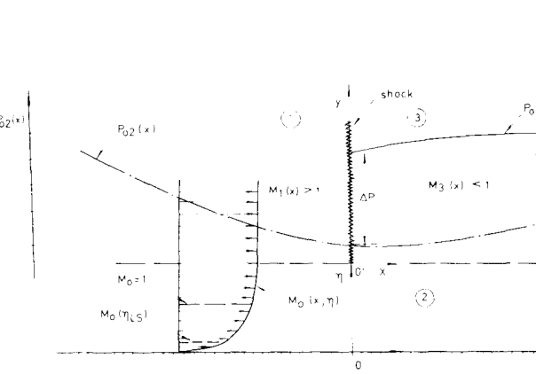
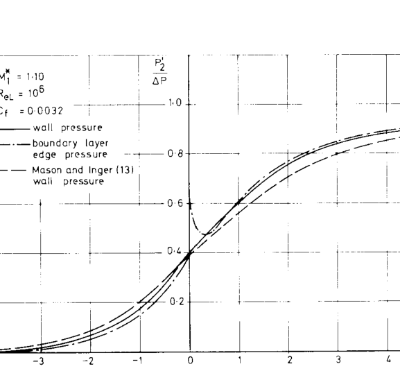
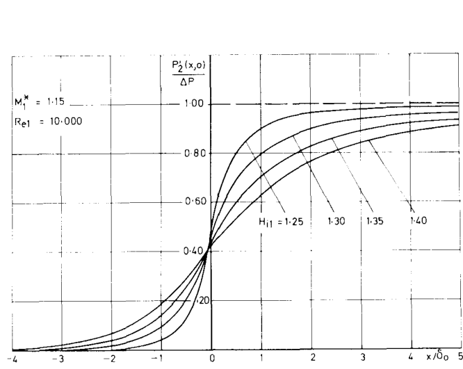
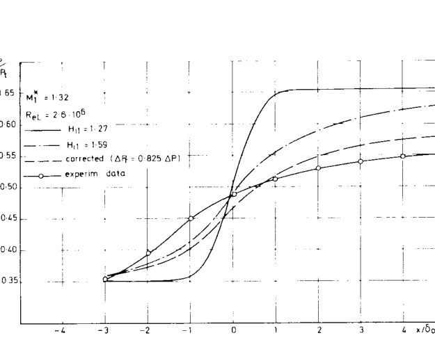

01中文摘要
本文对跨声速正激波与未分离湍流边界层的相互作用作基础理论分析，将 Inger–Mason 小扰动方法推广到存在背景压力梯度的情形：同时计入干扰区上下游的显式压力梯度、压力梯度对当地边界层形状的隐式影响，以及干扰引起的边界层增厚（堵塞）反作用，后者在通道流和叶轮机械中十分重要。理论给出扰动压力与表面摩阻的详细分布，包括横向压力梯度，并可局部嵌入由跨声速无粘流和边界层预测组成的全局计算框架。对未分离流动，理论预测与实验符合良好。
原始摘要（英文/原文）
A basic theoretical analysis of the interaction of a transonic normal shock wave with a non-separating turbulent boundary layer in a background pressure gradient is given. The method is based on an extension of Inger and Mason’s small disturbance analysis to account for both explicit pressure gradients upstream and downstream of the interaction and the implicit pressure gradient effects on the local boundary layer shape plus the back-effect of the interaction-induced boundary layer thickness growth (blockage) that is important in channel flows and turbomachinery applications. The theory predicts the detailed disturbance pressure and skin friction distributions, including lateral pressure gradients, and is readily imbedded locally in a global calculation scheme involving transonic inviscid and boundary layer prediction codes upstream and downstream of the shock. Good agreement is found between the resulting theoretical predictions and experimental results for non-separating flows.
02阅读说明
11 页 ASME 1977 燃气轮机会议论文（77-GT-34），理论分析为主，附 Ackeret、Gadd 实验对比和 I-103 叶栅应用示例。bundle 的公式、图轴与部分图注 OCR 乱码严重，已用 PDF 第4、5、7、8、9页核对式(7)、(8)、(10)-(19)、(38) 及图2、图3、图4、图6；Fig. 5 未在抓图清单中，未使用。无表格；方法与结论信息较完整，部分实验工况数值受 OCR 限制，图8/图9的 Re 与 Cf 未能可靠读出。 文章类型：会议
03一句话核心与三句话摘要
将 Inger–Mason 小扰动理论推广到含压力梯度的跨声速正激波-湍流边界层干扰，计入通道堵塞并预测压力/摩阻。
- 问题与缺口：跨声速正激波-湍流边界层干扰出现在翼型、压气机/涡轮叶栅和超声速进气道中，Inger–Mason 小扰动理论未计及背景流向压力梯度和通道堵塞。 AI概括
- 方法与发现：用 Lighthill 双 deck 模型、Fourier 变换与留数法求解压力扰动，计入显式/隐式压力梯度和边界层增厚堵塞；典型上游影响 3–4 个边界层厚度，显式梯度效应仅 1–3%，隐式形状因子效应很大，Ackeret 数据下游压力差约 5%。 AI概括
- 结论：方法可局部嵌入跨声速无黏/边界层全局计算，适用于非分离流；堵塞修正对小通道重要，但存在未知分离泡时无法客观修正。 AI概括
04核心内容清单
| 要点 | 类型 | 重要性 | 原文依据 | 属性 |
|---|---|---|---|---|
| 研究对象是含背景流向压力梯度的跨声速正激波-湍流边界层干扰，目标是给出可嵌入全局计算的局部压力/摩阻预测。 | 研究目标 | A | p1 摘要；p2 引言 | 原文明确 |
| 采用 Lighthill 双 deck 模型：区域2分为上部旋转混合层与近壁黏性子层，外部为激波隔开的超声速/亚声速势流1、3。 | 理论模型 | A | p2-3；图1 | 原文明确 |
| 基本压力分解：x>0 的虚拟压力 p02(x)=p03(x)-ΔP，使无激波基本流与含激波下游压力一致。 | 公式 | A | p3，式(1) | 原文明确 |
| 线性化后得到含基本压力梯度源项的压力扰动方程(7)；忽略显式梯度并把系数冻结在激波位置，化为 Lighthill 方程(8)。 | 控制方程 | A | p4，式(7)、(8) | 原文明确 |
| 边界层边缘压力相等、流线斜率连续和壁面无穿透给出上下游边界条件，压力梯度通过 β1(x)、ω(x) 显式进入。 | 边界条件 | A | p4，式(9)-(13)、(12a) | 原文明确 |
| 对 x 作 Fourier 变换，用单位解 Q 和留数定理把问题化为 ODE，有限差分求解后反演得到压力分布。 | 求解方法 | A | p4-5，式(14)-(27) | 原文明确 |
| 摩阻扰动由 Lighthill 黏性子层与 Inger 分析给出，下游出现 (ik)^(2/3) 支点积分。 | 摩阻模型 | A | p7，式(34)-(36) | 原文明确 |
| 实际激波后压力低于无黏值，因边界层增厚造成堵塞；对小高度通道用式(38)修正。 | 堵塞修正 | A | p7，式(38) | 原文明确 |
| 显式压力梯度对压力扰动的影响仅约 1–3%，图3两曲线最大差 0.5%。 | 参数敏感性 | A | p8；图3 | 原文明确 |
| 隐式压力梯度通过 H1 影响很大：H1 越低，压力扰动越靠近壁面反射，分离被延迟。 | 参数敏感性 | A | p8-9；图4、图6(a) | 原文明确 |
| Re 增大延迟分离并使干扰靠近壁面反射；Mach 数越高干扰区越短、分离越靠上游。 | 参数敏感性 | A | p9；图5、图6(b) | 原文明确 |
| 与 Ackeret 数据对比，计入堵塞后下游压力差仅 5%；与 Gadd 两组数据吻合很好。 | 实验验证 | A | p9-10；图7-图9 | 原文明确 |
05引言：研究问题与领域缺口
引言指出跨声速正激波与湍流边界层干扰的工程背景：翼型跨声速绕流、跨声速压气机/涡轮叶栅、超声速进气道。干扰的重要特征是形成同时具有流向和横向梯度的局部压力场。已有 Inger–Mason 小扰动分析只处理均匀来流中的干扰，未显式包含背景流向压力梯度，也未计及干扰诱导的边界层增厚对通道流动的堵塞回馈；而叶栅通道高度小，后者不可忽略。本文目标是给出含压力梯度的局部压力场预测方法，使其能嵌入上游/下游的跨声速无黏与边界层计算，并保持对非分离流的定量精度（p1 摘要、p2 引言）。
06流动条件与几何构型
| 项目 | 数值/描述 | 依据 | 备注 |
|---|---|---|---|
| 典型预测工况（图2） | M1*=1.10，Reδ=10^6，Cf=0.0032 | 图2，p8 | 压力场预测示例，非实验 |
| 下游压力梯度算例（图3） | M1*=1.15，H1=1.40，Re_l=24,000；p03(x)=p03*+a(x)ΔP，a(x)=0.25、0.50、0.75、1.00、1.30 | 图3，p8 | 下游线性减速；主图对比 a(x) 与无梯度工况 |
| 形状因子敏感性算例（图4） | M1*=1.15，Re_l=10,000，H1=1.25、1.30、1.35、1.40 | 图4，p9 | 逐 H1 给出壁面压力分布，不合并 |
| 雷诺数敏感性算例（图5） | M1*=1.10，平板（∂p/∂x=0），Re_l=10^6、10^7 | 图5，p9 | Fig. 5 未在抓图清单中，仅据正文/图注 |
| 摩阻形状因子算例（图6a） | M1*=1.15，Re_l=4,000，H1=1.25、1.40 | 图6(a)，p9 | 余弦曲线给出 Cf 随 x/δ0 变化 |
| 摩阻雷诺数算例（图6b） | M1*=1.15，H1=1.40，Re_l=4,000、24,000 | 图6(b)，p9 | 比较分离点位置 |
| Ackeret 对比工况（图7） | M1=1.12，Re_L=2.6×10^5，Cf=0.0023，H1=1.27（基本）/1.59（实际） | 图7，p9 | 实验数据取自 Ackeret et al. (5) |
| Gadd 对比工况1（图8） | M1=1.12；Re 与上游 Cf 由 Gadd 给出 | 图8，p10 | Re、Cf 具体数值受 OCR 限制，未能可靠读出 |
| Gadd 对比工况2（图9） | M1=1.26；Re 与上游 Cf 由 Gadd 给出 | 图9，p11 | 下游存在未知尺寸分离泡，未作堵塞修正 |
| I-103 叶栅应用（图10） | 入口 M=0.80，Re_chord=10^7，入口气流角 53°，出口气流角 2.1°，激波处 H1=1.35，Re_l=3388 | p10；图10 | 无黏势流由 VKI Van den Braembussche 松弛法计算，边界层用 Le Foll/Huo 积分法 |
| 流动类型 | 二维、定常、弱正激波、湍流边界层、非分离 | p1 摘要；p2-3 | 分离流不在模型适用范围 |
| 基本流 | 平行剪切层：u0=U0(x,y)，p0=p0(x)，ρ0=ρ0(y) | p3 | 允许流向压力梯度和法向密度分层 |
| 通道高度 h | 仅在小高度通道/叶栅算例中出现，具体值文中未提及 | p7、p10 | 式(38) 需 h 与 δ2* 之比 |
| 比热比 γ | 文中未给数值（式38中以符号出现） | p7 | 通常为 1.4，但本文未明确 |
| Kármán 常数 k | 0.41 | p7 | 速度剖面式(32)-(33) 使用 |
| 恢复因子 R | 文中未给数值（式33中以符号出现） | p6-7 | 用于可压缩温度剖面 |
07核心现象与关键参数
| 参数 | 定义 | 数值 | 关系/说明 | 依据 |
|---|---|---|---|---|
| ΔP | 正激波压升（激波强度） | 按各算例给定；实验中由来流 Mach 与激波决定 | 作为压力扰动方程的边界条件输入 | p1、p3 |
| p02(x)，p03(x) | 无激波时基本压力分布；含激波的下游压力分布 | p02(x)=p03(x)-ΔP（x>0） | 基本流给定数据 | p3，式(1) |
| M1*，M3* | 激波位置处上游/下游边界层外缘马赫数 | 各算例 M1*=1.10、1.15 等；M3* 未逐例给出 | 进入边界条件和堵塞式 | p3-4；图2-图6 |
| H1 | 运动学形状因子 H1=δ*/θ | 1.25–1.59（各算例） | 越低表示顺压梯度越强；低 H1 延迟分离、使压力反射靠近壁面 | p8-9；图4、图6(a) |
| Reδ，Re_l | 基于边界层厚度或当地长度的雷诺数 | 4,000、10,000、24,000、10^6 等（算例）；2.6×10^5（Ackeret） | Re 增大延迟分离、使干扰靠近壁面反射 | 图2-图7 |
| Cf | 当地壁面摩阻系数 | 0.0032（图2）；0.0023（图7 上游） | 由黏性子层分析给出分布；初始 Cf 不是分离位置的主控量 | 图2、图6、图7 |
| δ0 | 边界层厚度，作为流向无量纲长度尺度 | 图中 x/δ0 坐标；具体值未给 | 上游影响约 3–4 δ0 | p4、p7-8 |
| δ2* | 激波后边界层位移厚度（用于堵塞修正） | 由文献2的间断分析给出，本文未列数值 | 与 h 之比控制堵塞修正强度 | p7，式(38) |
| h | 通道/叶栅通道高度 | 文中未给具体数值 | h 越小，δ2*/h 越大，堵塞修正越显著 | p7 |
| β1(x) | 上游边界条件中的压力梯度/马赫数因子，β1=√(M1²-1) | 随 x 变化 | 显式进入上游边界条件(11) | p4，式(12a) |
| ω(x) | 下游边界条件中由当地马赫数与压力比组成的耦合因子 | 文中式(12a)给出，OCR 上下标不全 | 显式进入下游边界条件(12) | p4，式(12a) |
| k | Kármán 常数 | 0.41 | 用于 Le Foll 速度剖面 | p7 |
| x/δ0 | 以边界层厚度归一的流向坐标 | 图2-图7 横坐标，约 -5 至 5 | 负值为激波上游，正值为下游 | 图2-图7 |
| 上游影响长度 | 激波上游压力扰动可感知的距离 | 约 3–4 个边界层厚度 | 由压力扰动解预测 | p7 |
| Ackeret 对比下游压力差 | 计入堵塞后的理论预测与实验在下游的压力相对差 | 约 5% | 定量验证精度 | p9；图7 |
08方法与数据
采用 Lighthill 双 deck 模型：边界层区域2分为上部高雷诺数旋转混合层和近壁薄黏性子层；外部为入射超声速势流1、给定弱正激波、下游亚声速势流3（图1）。基本流设为平行剪切层 u0=U0(x,y)、p0=p0(x)、ρ0=ρ0(y)，叠加小扰动（式6）。将扰动代入连续、x/y 动量与能量方程，忽略二阶项并交叉微分，得含基本压力梯度源项的压力扰动方程（式7）；再忽略压力梯度的显式影响、把系数冻结在激波入射位置，化为 Lighthill 方程（式8）。边界条件由边界层边缘压力相等、流线斜率连续和壁面法向速度为零给出（式9–13），压力梯度通过 β1(x)、ω(x) 进入上下游边界条件。对 x 作 Fourier 变换得关于 η 的 ODE（式14–16），用满足 Q(k,0)=1、Qη(k,0)=0 的单位解构造全解（式16a–17）；由留数定理把耦合积分方程化为 m 个一阶 ODE，用有限差分求解并反演，得到上游、下游和壁面压力分布（式18–27）。湍流边界层速度剖面采用 Le Foll 不可压缩剖面的可压缩化形式（式32–33）。摩阻扰动由 Lighthill 黏性子层与 Inger 分析计算（式34–36）。对通道高度 h 较小的情形，用一维小扰动和连续方程推导实际激波压升的堵塞修正（式38），其中下游位移厚度由文献2的间断分析给出。最后与 Ackeret 等和 Gadd 的实验对比，并给出 I-103 叶栅应用示例。
| 项目 | 内容 | 依据 | 备注 |
|---|---|---|---|
| 研究类型 | 理论/解析建模 + 数值求解 + 实验数据对比 | p1-10 | 不是 CFD，无网格/湍流模型 |
| 基本模型 | Lighthill 双 deck：外层旋转混合层 + 近壁黏性子层；外部超声速/亚声速势流由弱正激波连接 | p2-3；图1 | 边界层区域2为平行剪切层 |
| 控制方程 | 二维定常连续、x/y 动量、能量方程；线性化后交叉微分为压力扰动方程 | p3-4，式(2)-(7) | 忽略二阶扰动 |
| 近似1 | 忽略基本压力梯度对扰动方程的显式影响，系数冻结在激波入射位置 | p4 | 适用条件 p02/(∂p02/∂x) >> 2~4 δ0 |
| 近似2 | 压力梯度通过边界条件中的 β1(x)、ω(x) 和速度剖面形状隐式保留 | p4、p8 | 显式效应小、隐式效应大 |
| 求解方法 | Fourier 变换 + 单位解 Q + 留数定理化为 ODE + 有限差分 + 反演 | p4-5，式(14)-(27) | 零点用 IBM RTNI 求根 |
| 速度剖面 | Le Foll 不可压缩剖面的可压缩化形式，参数 X、f、k=0.41、R | p6，式(32)-(33) | 兼顾任意压力梯度与解析简洁 |
| 摩阻计算 | Lighthill 黏性子层 + Inger 分析，Fourier 变换求 ∂u'/∂η | p7，式(34)-(36) | 下游为 (ik)^(2/3) 支点积分 |
| 堵塞修正 | 一维小扰动 + 连续方程，用 δ2*/h 修正实际激波压升 | p7，式(38) | δ2* 由文献2间断分析给出 |
| 实验验证 | Ackeret et al. (M1=1.12) 与 Gadd (M1=1.12、1.26) 的壁面压力数据 | p9-10；图7-图9 | 比较前先由 discontinuity analysis 算 H1 |
| 工程应用 | I-103 叶栅：无黏势流 + 边界层积分 + 本文干扰分析 | p10；图10 | 入口 M=0.80、Re_chord=10^7 |
| 计算成本 | 存储约 16k，执行约 1 min（先进计算机），比原 Inger–Mason 程序小约一个量级 | p7 | 原文明确 |
| 网格/湍流模型 | 不适用（解析/积分模型，无 CFD 网格与湍流输运模型） | 全文 | 湍流仅通过速度剖面与摩阻关系体现 |
| 不确定度/重复性 | 文中未提及（理论论文，无实验不确定度分析） | 全文 | 与实验对比只给相对差 |
09核心推导与公式
以 Lighthill 双 deck 模型为骨架：把湍流边界层分为外层可压缩旋转混合层与近壁黏性子层；对平行剪切基本流线性化 N-S 方程，得到压力扰动方程；用 Fourier 变换和留数定理求压力场；再由黏性子层求摩阻；最后叠加通道堵塞对实际激波压升的修正。
关键假设
- 二维、定常、弱正激波、湍流边界层、非分离流动（p1 摘要、p2-3）
- 基本流为平行剪切层：u0=U0(x,y)，p0=p0(x)，ρ0=ρ0(y)（p3）
- 扰动为小量，忽略二阶及更高阶项（p4）
- 激波干扰区流向尺度远小于基本压力变化尺度：p02/(∂p02/∂x) >> 2~4 δ0，湍流中通常成立（p4）
- 忽略基本压力梯度对压力扰动方程的显式影响，把方程系数冻结在激波入射位置（p4）
- 边界层速度剖面用 Le Foll 剖面的可压缩化形式，Kármán 常数 k=0.41（p6-7）
- 堵塞修正用一维小扰动与连续方程，适用于通道高度较小、边界层增厚显著的情形（p7）
推导过程
把含激波的下游无黏压力 p03 与无激波基本压力 p02 区分；对 x>0 构造虚拟基本压力 p02=p03-ΔP，使基本流在激波前后连续。实际流动写成基本平行剪切流加小扰动，激波压升 ΔP 作为边界条件施加在均匀/非均匀流界面。
将扰动表达式代入二维定常连续、x 动量、y 动量和能量方程，忽略二阶及以上扰动并交叉微分以消去部分速度项，得到压力扰动 p' 的方程。由于基本流存在压力梯度，方程右端出现与 du/dx、dp0/dx 有关的源项；这些速度项无法完全消去，是后续近似的出发点。
忽略基本压力梯度对扰动方程的显式影响，并利用干扰区流向尺度远小于基本压力变化尺度的条件，把方程系数取在激波入射位置（记为 *）。方程退化为经典 Lighthill 压力扰动方程；压力梯度的作用改为通过当地剖面形状和边界条件隐式进入。
在边界层边缘要求压力相等，得到上游 h1=h2、下游 h3=(p01*/p03*)h2-ΔP/p03*。流线斜率连续条件把压力扰动的法向梯度与 h1、h3 的导数联系起来，基本压力梯度通过 β1(x) 和 ω(x) 显式出现；壁面法向速度为零则要求壁面处压力扰动的法向梯度为零。
以边界层厚度 δ0 归一化长度，对 x 作 Fourier 变换，把压力扰动方程化为关于法向坐标 η 的二阶 ODE。方程仍保留当地马赫数梯度项，需数值积分；变换后的未知量是压力扰动的谱函数 Π(k,η)。
引入满足壁面条件的单位解 Q(k,η)，全解写成 H2(k)Q(k,η)/Q(k,1)。把上下游边界条件与 Q 耦合，得到关于 h1、h3 Fourier 变换的积分方程；用留数定理将其化为 m 个一阶 ODE（m 为分母函数 D(k,1) 的零点数），用有限差分求解，再反演得到上游、下游和壁面压力分布。
Lighthill 黏性子层保留上游影响的主要部分，也使壁面摩阻扰动可由速度导数求得。对不可压缩连续方程作 Fourier 变换得到 ∂u'/∂η，再乘黏性系数得到壁面剪应力扰动；下游积分出现 (ik)^(2/3) 支点，需按支点围道处理。
实验显示激波后实际压力总低于无黏正激波值，原因是边界层过激波突然增厚、挤占通道面积，降低有效激波强度。对高度 h 的通道，用一维小扰动关系与连续方程，把实际压升写成无黏压升乘以含 δ2*/h 与下游马赫数的修正因子；δ2* 由文献2的间断分析给出。
适用边界：模型限于二维、定常、弱正激波、非分离湍流边界层；显式压力梯度被忽略，仅保留隐式剖面效应；速度剖面用 Le Foll 近似，不含具体湍流输运；堵塞式(38)针对小高度通道，且需要 δ2*，下游有未知分离泡时无法客观修正；实验验证只覆盖 M≈1.12–1.26 的少数工况。
10结果：主要发现与关键证据
典型压力场（图2，M1*=1.10、Reδ=10^6、Cf=0.0032）显示：激波位置处边界层边缘压力间断，紧邻下游出现激波后膨胀，上游影响距离约为 3–4 个边界层厚度；壁面压力略高于边界层边缘压力。参数研究表明：基本压力梯度在扰动方程系数中的显式效应很小，约 1–3%，图3下游线性减速与无梯度干扰的壁面压力最大差仅 0.5%；但通过速度剖面形状因子 H1 的隐式效应很大，H1 越低，压力扰动越靠近壁面反射（图4）。Re 增大使干扰更靠近壁面反射、并延迟分离（图5、图6b）；Mach 数越高，干扰区长度越短、分离越向上游移动（p9）。图6b还显示，初始摩阻较高的低 Re 曲线反而更早分离，说明初始 Cf 大小不是控制因素。与 Ackeret 数据（M1=1.12、ReL=2.6×10^5、Cf=0.0023、H1=1.27 基本/1.59 实际）对比，用 H1=1.59 已较好，计入堵塞后下游压力差仅 5%（图7）；与 Gadd 的 M1=1.12、1.26 数据吻合很好（图8、图9），图9因下游存在未知尺寸分离泡而未作堵塞修正。I-103 叶栅示例给出入口 M=0.80、Re_chord=10^7、入口气流角 53°、出口 2.1°，激波处 H1=1.35、Re_l=3388（图10）。
| 发现 | 证据 | 证据类型 | 强度 | 位置 | 属性 |
|---|---|---|---|---|---|
| 典型压力场在激波处出现边界层边缘压力间断，紧邻下游出现激波后膨胀，上游影响约 3–4 个边界层厚度。 | 图2（M1*=1.10、Reδ=10^6、Cf=0.0032）的壁面/边缘压力曲线；正文明确给出 3–4 δ。 | 理论预测 | 强 | p7-8；图2 | 原文明确 |
| 基本压力梯度在扰动方程系数中的显式效应很小，约 1–3%。 | 数值试验；图3下游线性减速与无梯度工况的壁面压力最大差仅 0.5%。 | 参数敏感性 | 强 | p8；图3 | 原文明确 |
| 压力扰动强烈依赖边界层初始形状因子 H1；H1 越低，压力扰动越靠近壁面反射。 | 图4给出 H1=1.25、1.30、1.35、1.40 的壁面压力分布，曲线随 H1 明显分开。 | 参数敏感性 | 强 | p8；图4 | 原文明确 |
| 顺压梯度（低 H1）延迟分离，逆压梯度使分离进一步上游移动。 | 图6(a) 中 H1=1.25 的 Cf 曲线在更下游才降到零，H1=1.40 更早分离；正文明确说明。 | 参数敏感性 | 强 | p9；图6(a) | 原文明确 |
| Re 增大延迟分离并使干扰更靠近壁面反射；Mach 数越高干扰区越短、分离越靠上游。 | 图5（Re_l=10^6、10^7）与图6(b)（Re_l=4,000、24,000）；正文明确。 | 参数敏感性 | 强 | p9；图5、图6(b) | 原文明确 |
| 初始摩阻系数的大小不是分离位置的主控因素：初始 Cf 较高的低 Re 曲线反而更早分离。 | 图6(b) 两曲线分离点对比；正文明确。 | 参数敏感性 | 中 | p9；图6(b) | 原文明确 |
| 实际激波后压力总低于无黏正激波值，堵塞效应降低有效激波强度。 | 实验数据观察与式(38)推导；Ackeret 工况计入堵塞后预测改善。 | 机制/验证 | 强 | p7、p9；图7 | 原文明确 |
| 与 Ackeret 数据对比，采用实际 H1=1.59 已较好，计入堵塞后下游压力差仅 5%。 | 图7：H1=1.27 为基本无干扰值，1.59 为间断分析值；虚线为堵塞修正。 | 实验验证 | 强 | p9；图7 | 原文明确 |
| 与 Gadd 的 M1=1.12、1.26 数据吻合很好；图9因未知分离泡未作堵塞修正。 | 图8、图9 的壁面压力对比；正文称 agreement very good。 | 实验验证 | 强 | p9-10；图8、图9 | 原文明确 |
| 方法可嵌入全局跨声速计算，计算成本比原 Inger–Mason 程序小约一个量级。 | 存储约 16k、CPU 约 1 min 的说明。 | 工程可用性 | 中 | p7、p10 | 原文明确 |
11机制解释与论证链
双 deck 机制：近壁黏性子层是上游影响的主要通道，外层旋转混合层把激波压升转化为压力扰动并向上游/下游传播；基本压力梯度一方面通过边界条件中的 β1、ω 显式进入，另一方面通过改变速度剖面形状因子 H1 隐式改变压力扰动的法向衰减与壁面反射位置。H1 越低（顺压梯度越强），压力扰动越靠近壁面反射，分离被延迟；Re 增大也使干扰更贴近壁面并延迟分离。通道内边界层过激波突然增厚，挤占有效流通面积，使实际激波压升低于无黏值，形成“堵塞”回馈；这一效应在叶栅小通道中尤其重要。【AI概括，依据 p3-9】
12讨论：结论、贡献与局限
作者强调压力扰动强烈依赖边界层初始条件，因此激波诱导的边界层形状改变必须纳入最终压力场计算，不能只用无干扰剖面。显式压力梯度项在多数工程情形可忽略，但隐式剖面形状效应不能忽略。下游实际压升总低于无黏正激波值，原因是边界层过激波突然增厚、挤占通道有效面积，降低有效激波强度；对小高度叶栅通道必须用式(38)修正。方法适用于非分离流；若下游形成未知尺寸分离泡，则位移厚度未知，无法客观作堵塞修正（图9）。作者还指出该方法可作为全局跨声速计算的“缺失环节”：无黏计算给出激波位置/强度与表面压力，边界层积分方法算到激波前，干扰分析给出激波后边界层状态与局部压力，再作为下游边界层计算的初值。
作者结论
本文将 Inger–Mason 跨声速正激波-湍流边界层小扰动分析推广到含流向压力梯度的流动：压力梯度以显式边界条件项和隐式剖面形状两种方式进入，显式项在多数情形只有 1–3% 的影响、可忽略，隐式 H1 效应则很强；干扰诱导的边界层增厚造成通道堵塞，使实际激波压升低于无黏值，对小高度叶栅必须修正。方法能预测压力与摩阻分布、上游影响约 3–4δ0，并与 Ackeret、Gadd 的非分离实验数据定量吻合（Ackeret 下游差约 5%），可嵌入全局无黏/边界层计算；但模型不适用于分离流，存在未知分离泡时无法客观作堵塞修正。
主要贡献
- 把 Inger–Mason 小扰动理论推广到含背景流向压力梯度的跨声速正激波-湍流边界层干扰。
- 区分显式与隐式压力梯度效应：显式项 1–3% 可忽略，隐式形状因子 H1 效应显著。
- 推导小高度通道的堵塞修正，使实际激波压升低于无黏值。
- 给出可嵌入全局跨声速计算的快速方法（约 16k 存储、1 min CPU），并用 Ackeret/Gadd 数据验证。
- 给出 I-103 叶栅的工程应用示例。
局限与未解决问题
仅适用于二维、定常、弱正激波、非分离湍流边界层；显式压力梯度被忽略，只保留隐式剖面效应；速度剖面用 Le Foll 近似，不含具体湍流输运或转捩模型；堵塞式(38)针对小高度通道且需 δ2*，下游有未知分离泡时不能客观修正；实验验证仅覆盖 M≈1.12–1.26 的少数工况，高亚声速/跨声速强激波与分离流未验证；图8/图9的 Re 与 Cf 在材料中不清晰，定量复现受限。
13对高速流动与工程的意义
对叶栅/进气道内跨声速正激波-边界层干扰，本文提供了可嵌入全局计算的局部压力/摩阻预测方法：工程上可用 H1 与 Re 快速判断分离趋势，用小通道堵塞修正避免高估激波后压力；方法计算量小，适合设计迭代。不能回答分离流、强激波、非定常或三维效应显著的情形。【AI推断，基于原文方法定位】
14核心图件




15可引用原文素材
| 原文短句 | 可支持的观点 | 位置 | 使用建议 |
|---|---|---|---|
| “the boundary layer edge pressure is discontinuous at the shock position” | 激波处边缘压力间断、下游出现激波后膨胀 | p7 | 描述典型压力场特征 |
| “the upstream influence distance is predicted to be on the order of 3-4 boundary layer thickness” | 上游影响尺度约 3–4δ | p7 | 引用上游影响长度 |
| “the effect is rather small, on the order of 1 to 3 percent” | 显式压力梯度效应很小 | p8 | 说明显式梯度可忽略 |
| “the lower the value of this parameter, the nearer to the solid wall reflection” | 低 H1 使压力扰动更靠近壁面反射 | p8 | 解释形状因子效应 |
| “increase of the Reynolds number delays the separation of the flow” | Re 增大延迟分离 | p9 | 引用 Re 效应 |
| “the actual pressure behind the shock never reaches the inviscid flow value” | 堵塞使实际激波压升低于无黏值 | p7 | 说明堵塞修正的必要性 |
| “the downstream difference of the experimental curve and of our final prediction is only 5 percent” | Ackeret 工况计入堵塞后的定量精度 | p9 | 引用验证精度 |
16最终核验
| 核验项 | 结论 |
|---|---|
| 仅基于全文 | 是。仅使用 bundle 文本、图注与 PDF 第4、5、7、8、9页核对公式和图；未引入外部知识或外部数据。 |
| A 级要点有依据 | 是。A 级要点均有页码、图号或公式支撑：双 deck 模型（p2-3/图1）、式(1)(7)(8)(38)、显式梯度 1–3%（p8/图3）、H1 效应（p8-9/图4、图6a）、Re/Mach 效应（p9/图5、图6b）、Ackeret 5%（p9/图7）。 |
| 属性标注 | 是。原文明确、AI概括、AI推断逐条标注；机制段与工程意义按概括/推断标注。 |
| 覆盖范围 | bundle 11 页全文读完；PDF 核对第4、5、7、8、9页；图1、2、4、7 来自抓图清单，Fig. 5 未在清单中故未用。 |
| 无编造 | 是。未编造页码、图号、公式或数据；公式(7)(8)(10)-(19)(38) 经 PDF 核对，个别 OCR 上下标不确定处在正文注明；图8/图9的 Re、Cf 未可靠读出，写“受 OCR 限制”；γ、R、h 等未给数值写“文中未给数值”或“文中未提及”。 |
需回原文确认
- 式(38) 分母中 (1+δ2*/h)M_e3² 的符号与 M_e3 定义需回原文/推导细节确认；OCR 与 PDF 均显示减号，但物理适用范围需核对。
- 式(12a) 中 ω(x) 的完整表达式（M2/M1、p02/p03 的幂次）受 OCR 限制，未能完全确认。
- 图8、图9 对应的 Gadd 工况 Re 与上游 Cf 具体数值未能在材料中可靠读出。
- Fig. 5 未包含在抓图清单中，Re 效应的图形证据只能依据正文与图注。
- 摘要所称 “lateral pressure gradients” 具体指法向还是展向梯度，原文未展开，需回原文核对。
- 模型对分离流的失效边界（多强的激波/多大分离泡）未给出定量判据。
- 实验对比只覆盖 M≈1.12–1.26，更高跨声速马赫数与叶栅通道强堵塞工况的精度未知。
17关联文献
依据标签、板块、构型与作者脉络自动关联，可据此追踪同一问题的前序与后续工作。
18引用格式
选择期刊风格后复制；出处保留原刊名。BibTeX 可直接用于 LaTeX。
引用格式
Panaras, A. G. & Inger, G. R. 1977 Transonic Normal Shock-Turbulent Boundary Layer Interaction in Pressure Gradient Flows. ASME 1977 International Gas Turbine Conference and Products Show V001T01A033. https://doi.org/10.1115/77-GT-34
PDF上传 PDF 并更新本页
本页缺少全文、摘要或图件时，可在浏览器本地补入 PDF。解析完全在本机完成，不上传网络；完成后会更新本页的 PDF 打开链接、原摘要、IMRaD 机器抽取、关键句与含图页面。复杂的公式语义与中文深度解读仍以原文和既有精读记录为准。